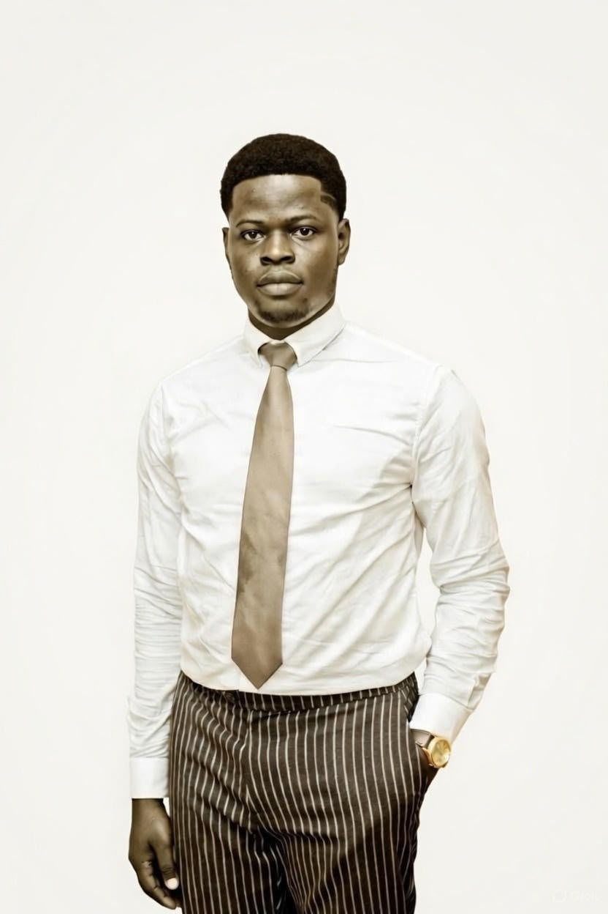

PR practitioner and youth development advocate, currently expanding into computing through the NCC Level 4 Diploma at IPMC University College.

I'm a Public Relations student at UPSA and a Computing student at IPMC, working at the intersection of communication, leadership, and technology. Through the Rosemond Girl Child Foundation I plan and coordinate programmes supporting girls' education and youth development, and I lead youth programmes at Comfort Word Chapel. In 2025 I studied International Human Rights, Conflict Management, and Peace Building at the Jacobs-Abbey Global Institute for Leadership Studies in the USA.
This page brings that together — the community work, the coursework, and what I build outside of both.
A full six-task systems project for IPMC University College, from requirements through to testing — UML use case and class diagrams, a work breakdown structure and Gantt chart, clickable UI prototypes, and 16 documented test cases.
An analysis of Amazon's management approach — applying Katz's managerial skills framework, Burns and Stalker's organisational structure model, SWOT analysis alongside Goal-Setting Theory, and Woodcock's Building Blocks with Lewin's leadership styles.
A six-part study of how Amazon runs its digital business — emerging technologies, CRM, supply chain management, marketplace revenue, security threats, and a five-year e-commerce strategy.
A scenario-based project covering hardware components, operating system functions, and software categories, plus networking — LAN/MAN/WAN, topologies, and the OSI model — alongside distributed and quantum computing concepts.
Outstanding Youth Leadership Award, for contributions to girls' education and youth development at the Rosemond Girl Child Foundation.
English (Fluent)
Active volunteer in youth development and education initiatives on campus.
Youth leadership, community service, reading, public speaking & technology.
A YouTube channel producing animated content for young children, blending storytelling with values kids can carry into everyday life.
I play bass guitar and keyboard, and sing — mostly for church and personal projects.